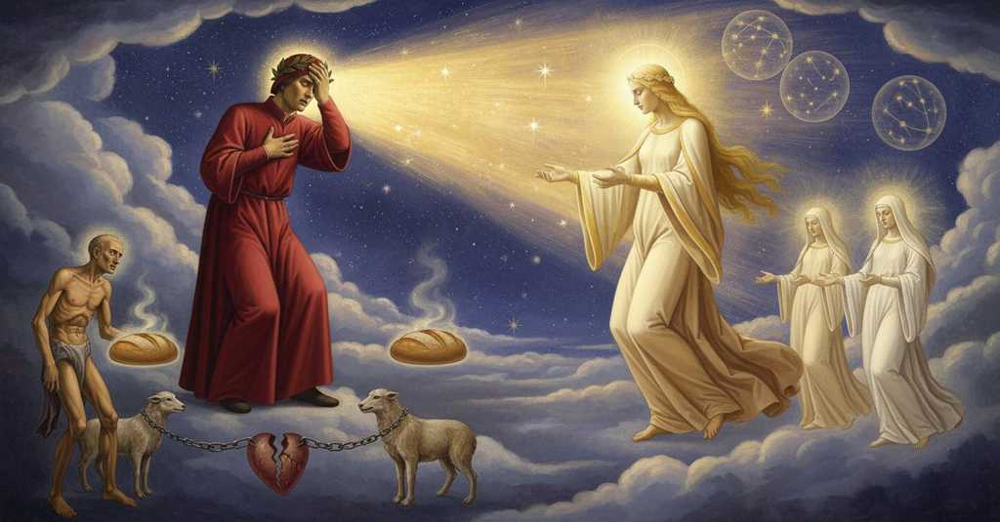

Paradiso — Canto 4

1
Intra due cibi, distanti e moventi
Between two foods, distant and moving
二つの食べ物の間で、
2
d’un modo, prima si morria di fame,
in the same way, a man would sooner die of hunger,
同じように離れ、同じように心を動かすなら、
3
che liber’ omo l’un recasse ai denti;
than a free man would bring one to his teeth;
自由な人がその一方を歯にかける前に、飢えで死ぬだろう。
4
sì si starebbe un agno intra due brame
so would a lamb stand between two cravings
同じように、二匹の獰猛な狼の渇望の間にいる子羊は、
5
di fieri lupi, igualmente temendo;
of fierce wolves, equally fearing;
等しく恐れながら、じっと動かないだろう。
6
sì si starebbe un cane intra due dame:
so would a dog stand between two does:
同じように、二頭の雌鹿の間にいる犬も動かないだろう。
7
per che, s’i’ mi tacea, me non riprendo,
for which, if I was silent, I do not blame myself,
だから、私が黙っていたとしても、自らを責めもしないし、
8
da li miei dubbi d’un modo sospinto,
impelled in equal measure by my doubts,
私の疑問に同じように突き動かされていたのだから、
9
poi ch’era necessario, né commendo.
since it was necessary, nor do I praise myself.
必要に迫られていたのだから、褒めもしない。
10
Io mi tacea, ma ’l mio disir dipinto
I was silent, but my desire was painted
私は黙っていたが、私の欲望は顔に描かれており、
11
m’era nel viso, e ’l dimandar con ello,
on my face, and my questioning with it,
それと共に問いかけも、はっきりした言葉よりも
12
più caldo assai che per parlar distinto.
far more ardently than by distinct speech.
ずっと熱く表れていた。
13
Fé sì Beatrice qual fé Danïello,
Beatrice did as Daniel did,
ベアトリーチェは、ダニエルがしたようにした。
14
Nabuccodonosor levando d’ira,
lifting Nebuchadnezzar from the wrath
ネブカドネザルの怒りを取り除いて。
15
che l’avea fatto ingiustamente fello;
that had made him unjustly cruel;
その怒りは彼を不当に非道にさせていたのだ。
16
e disse: «Io veggio ben come ti tira
and she said: «I see well how one
そして言った。「私はよくわかる、あなたを一つの、
17
uno e altro disio, sì che tua cura
and the other desire so pulls you, that your concern
そしてもう一つの欲望が引っぱっているのが。そのためにあなたの気掛かりが
18
sé stessa lega sì che fuor non spira.
so binds itself that it does not breathe forth.
自らを縛りつけ、外に息を漏らさないようにしていると。
19
Tu argomenti: “Se ’l buon voler dura,
You reason: “If the good will endures,
あなたはこう論じる。『善き意志が続くなら、
20
la vïolenza altrui per qual ragione
for what reason does the violence of another
他人の暴力が、どのような理由で、
21
di meritar mi scema la misura?”.
lessen for me the measure of merit?”.
功徳の尺度を私から減らすのか？』と。
22
Ancor di dubitar ti dà cagione
Also giving you cause to doubt
さらにあなたに疑念を抱かせるのは、
23
parer tornarsi l’anime a le stelle,
is the seeming return of souls to the stars,
プラトンの説によれば、
24
secondo la sentenza di Platone.
according to the doctrine of Plato.
魂が星々へ還るように見えることだ。
25
Queste son le question che nel tuo velle
These are the questions that in your will
これらが、あなたの意志の中で
26
pontano igualmente; e però pria
sting equally; and therefore I will first
等しく突き刺さる問いである。だからまず、
27
tratterò quella che più ha di felle.
treat the one that has more gall.
より多くの毒を持つものから、私は論じよう。
28
D’i Serafin colui che più s’india,
Of the Seraphim, the one who most in-Gods himself,
セラフィムの中で最も神と一体となる者も、
29
Moïsè, Samuel, e quel Giovanni
Moses, Samuel, and whichever John
モーセ、サムエル、そしてそなたが思う方のヨハネも、
30
che prender vuoli, io dico, non Maria,
you choose, I say, and even Mary,
申しておくが、マリアもまた、
31
non hanno in altro cielo i loro scanni
do not have their thrones in another heaven
他の天にその座を占めているわけではない、
32
che questi spirti che mo t’appariro,
than these spirits who just appeared to you,
今しがたそなたに現れたこの霊たちと違って。
33
né hanno a l’esser lor più o meno anni;
nor have more or fewer years to their being;
またその存在に、より多いも少ないもない年数を生きるわけでもない。
34
ma tutti fanno bello il primo giro,
but all make beautiful the first circle,
だが皆、最初の圏を美しく飾り、
35
e differentemente han dolce vita
and have sweet life in different degrees
そして様々に甘美な生命を享受している、
36
per sentir più e men l’etterno spiro.
by feeling more and less the eternal breath.
永遠の息吹を、より多く、またより少なく感じることによって。
37
Qui si mostraro, non perché sortita
They showed themselves here, not because this sphere
ここに姿を現したのは、この天球が
38
sia questa spera lor, ma per far segno
is allotted to them, but to be a sign
彼らに割り当てられたからではなく、しるしを示すため、
39
de la celestïal c’ha men salita.
of the celestial that has less ascent.
天上で最も昇り方が低いものの。
40
Così parlar conviensi al vostro ingegno,
It is necessary to speak thus to your intellect,
このように語ることが、そなたたちの知性にはふさわしい、
41
però che solo da sensato apprende
because only from what is sensed does it learn
なぜなら、感覚によるものからのみ学ぶからだ、
42
ciò che fa poscia d’intelletto degno.
that which it then makes worthy of the intellect.
後に知性にふさわしいものとなる事柄を。
43
Per questo la Scrittura condescende
For this reason Scripture condescends
このために聖書は、そなたたちの能力に合わせて身を屈め、
44
a vostra facultate, e piedi e mano
to your faculty, and attributes feet and hands
そして足や手を
45
attribuisce a Dio e altro intende;
to God, but means something else;
神に帰し、しかし別のことを意味している。
46
e Santa Chiesa con aspetto umano
and Holy Church with a human aspect
そして聖なる教会は、人間の姿をもって
47
Gabrïel e Michel vi rappresenta,
represents Gabriel and Michael to you,
ガブリエルとミカエルをそなたたちに示し、
48
e l’altro che Tobia rifece sano.
and the other who made Tobias healthy again.
またトビアを再び健やかにした、あの方をも。
49
Quel che Timeo de l’anime argomenta
What Timaeus argues about the souls
ティマイオスが魂について論じることは、
50
non è simile a ciò che qui si vede,
is not similar to what is seen here,
ここで見られることとは似ていない、
51
però che, come dice, par che senta.
because it seems that he means it as he says it.
なぜなら、彼が言う通りに、そう信じているように見えるからだ。
52
Dice che l’alma a la sua stella riede,
He says that the soul returns to its star,
彼は言う、魂はその星に還ると、
53
credendo quella quindi esser decisa
believing it to have been cut from there
そこから切り離されたと信じているのだ、
54
quando natura per forma la diede;
when nature gave it as a form;
自然が魂を形相として与えた時に。
55
e forse sua sentenza è d’altra guisa
and perhaps his meaning is of another kind
そして恐らく彼の説は、別の種類のものであり、
56
che la voce non suona, ed esser puote
than the words sound, and it may have
言葉の響きとは異なり、ありうることだ、
57
con intenzion da non esser derisa.
an intention that should not be derided.
嘲笑されるべきではない意図を伴っていることも。
58
S’elli intende tornare a queste ruote
If he means that the honor of the influence
もし彼が、これらの天輪に帰すると意図したのが、
59
l’onor de la influenza e ’l biasmo, forse
and the blame return to these wheels, perhaps
その影響力の誉れと非難であるならば、恐らく
60
in alcun vero suo arco percuote.
his bow strikes some truth.
彼の弓は何らかの真実を射ているのだろう。
61
Questo principio, male inteso, torse
This principle, misunderstood, once twisted
この原理は、誤解されて、かつて
62
già tutto il mondo quasi, sì che Giove,
almost the whole world, so that it ran
ほとんど全世界を歪めてしまった、その結果、ユピテル、
63
Mercurio e Marte a nominar trascorse.
to name Jupiter, Mercury, and Mars.
メルクリウス、そしてマルスと名付けるに至ったのだ。
64
L’altra dubitazion che ti commove
The other doubt that stirs you
そなたを揺さぶるもう一つの疑念は、
65
ha men velen, però che sua malizia
has less venom, for its malice
毒はより少ない、というのもその悪意が
66
non ti poria menar da me altrove.
could not lead you from me elsewhere.
そなたを私から他所へ導くことはできぬゆえ。
67
Parere ingiusta la nostra giustizia
For our justice to seem unjust
我らの正義が不正に見えることは、
68
ne li occhi d’i mortali, è argomento
in the eyes of mortals, is an argument
定命の者たちの目には、それは論拠となる
69
di fede e non d’eretica nequizia.
of faith and not of heretical wickedness.
信仰の、異端の邪悪のそれではなく。
70
Ma perché puote vostro accorgimento
But because your understanding can
しかし、そなたの知性は
71
ben penetrare a questa veritate,
well penetrate to this truth,
この真理をよく見抜くことができるゆえ、
72
come disiri, ti farò contento.
as you desire, I will make you content.
そなたが望むように、私はそなたを満足させよう。
73
Se vïolenza è quando quel che pate
If violence is when he who suffers
もし暴力が、苦しむ者が
74
nïente conferisce a quel che sforza,
contributes nothing to him who forces,
強いる者に何も与えない時であるならば、
75
non fuor quest’ alme per essa scusate:
these souls were not excused by it:
この魂たちはそれによって許されはしなかったのだ。
76
ché volontà, se non vuol, non s’ammorza,
for will, if it wills not, is not quenched,
なぜなら意志は、欲しなければ、消えはしない、
77
ma fa come natura face in foco,
but acts as nature does in fire,
むしろ火の中にある自然がするように振る舞う、
78
se mille volte vïolenza il torza.
if violence a thousand times should twist it.
たとえ千度、暴力がそれを捻じ曲げようとも。
79
Per che, s’ella si piega assai o poco,
Therefore, if it bends much or little,
それゆえ、もしそれが少なからず屈するなら、
80
segue la forza; e così queste fero
it follows the force; and so these did,
力に従うのだ。そしてこの者たちもそうした、
81
possendo rifuggir nel santo loco.
having the power to flee back to the holy place.
聖なる場所へと逃げ帰ることができたにもかかわらず。
82
Se fosse stato lor volere intero,
If their will had been entire,
もし彼女らの意志が完全であったなら、
83
come tenne Lorenzo in su la grada,
like that which Lawrence held upon the grid,
焼き網の上のロレンツォが保ち、
84
e fece Muzio a la sua man severo,
and made Mucius severe to his own hand,
ムキウスが自らの手に厳しくしたように、
85
così l’avria ripinte per la strada
so it would have driven them back on the road
その意志は彼女らを道へと押し返したであろう
86
ond’ eran tratte, come fuoro sciolte;
from which they were dragged, as soon as they were free;
引きずり出された道へ、自由になった途端に。
87
ma così salda voglia è troppo rada.
but so firm a will is all too rare.
しかし、かくも固い意志はあまりに稀なのだ。
88
E per queste parole, se ricolte
And by these words, if you have gathered them
そしてこれらの言葉によって、もしそなたが
89
l’hai come dei, è l’argomento casso
as you ought, the argument is annulled
しかるべく受け取ったのなら、論拠は無効となる
90
che t’avria fatto noia ancor più volte.
that would have troubled you still many times.
そなたをさらに何度も悩ませたであろう論拠が。
91
Ma or ti s’attraversa un altro passo
But now another pass crosses itself
しかし今、そなたの目の前を別の難所が
92
dinanzi a li occhi, tal che per te stesso
before your eyes, such that by yourself
横切っている、そなた自身では
93
non usciresti: pria saresti lasso.
you would not exit: you would first be weary.
抜け出せぬであろう、先に疲れ果ててしまうほどに。
94
Io t’ho per certo ne la mente messo
I have put it for certain in your mind
私はそなたの心に確かに入れた、
95
ch’alma beata non poria mentire,
that a blessed soul could not lie,
祝福された魂は偽りを言えぬということを、
96
però ch’è sempre al primo vero appresso;
because it is always near the first truth;
常に第一の真理に寄り添っているゆえに。
97
e poi potesti da Piccarda udire
and then you could hear from Piccarda
そしてその後、そなたはピッカルダから聞くことができた
98
che l’affezion del vel Costanza tenne;
that Constance kept her affection for the veil;
コスタンツァは修道衣への情愛を保ったと。
99
sì ch’ella par qui meco contradire.
so that she seems here to contradict me.
ゆえに彼女はここで私と矛盾するように見える。
100
Molte fïate già, frate, addivenne
Many times already, brother, it has happened
幾度もすでに、兄弟よ、起こったことだ、
101
che, per fuggir periglio, contra grato
that, to flee peril, against one's will
危険を逃れるために、意に反して
102
si fé di quel che far non si convenne;
one did what it was not right to do;
為すべきでないことが為されたことは。
103
come Almeone, che, di ciò pregato
like Alcmaeon, who, for this beseeched
アルクマイオンのように、父にそう懇願され、
104
dal padre suo, la propria madre spense,
by his own father, slew his own mother,
自らの母を手にかけ、
105
per non perder pietà si fé spietato.
so as not to lose piety he became impious.
孝心を失わぬために、不孝者となった。
106
A questo punto voglio che tu pense
At this point I want you to think
この点において、そなたに考えてほしい、
107
che la forza al voler si mischia, e fanno
that the force mixes with the will, and they make it
力が意志に混じり合い、そしてそれらが
108
sì che scusar non si posson l’offense.
so that the offenses cannot be excused.
その罪が許されぬように為すことを。
109
Voglia assoluta non consente al danno;
Absolute will does not consent to the harm;
絶対的な意志は害悪に同意しない。
110
ma consentevi in tanto in quanto teme,
but it consents to it insofar as it fears,
しかし、恐れる限りにおいて同意する、
111
se si ritrae, cadere in più affanno.
if it draws back, to fall into greater trouble.
もし退けば、より大きな苦悩に陥ると。
112
Però, quando Piccarda quello spreme,
Therefore, when Piccarda expresses that,
それゆえ、ピッカルダがそれを述べるとき、
113
de la voglia assoluta intende, e io
she means the absolute will, and I
彼女は絶対的な意志を指し、そして私は
114
de l’altra; sì che ver diciamo insieme».
the other; so that we both speak truth together.”
もう一方を指す。ゆえに我らは共に真実を語るのだ」。
115
Cotal fu l’ondeggiar del santo rio
Such was the flowing of the holy stream
かくのごときが聖なる川の波打ちであった、
116
ch’uscì del fonte ond’ ogne ver deriva;
that came from the fount whence every truth derives;
あらゆる真理が流れ出る泉から出でし、
117
tal puose in pace uno e altro disio.
thus it set at peace one and the other desire.
かくして一方と他方の望みを安らわせた。
118
«O amanza del primo amante, o diva»,
"O beloved of the first lover, O divine one,"
「おお、最初の恋人に愛されし者、おお、女神よ」
119
diss’ io appresso, «il cui parlar m’inonda
I said then, "whose speech so floods me
私は続けて言った、「あなたの言葉は私に溢れ、
120
e scalda sì, che più e più m’avviva,
and warms me, that more and more it gives me life,
私を温め、ますます私を生き返らせる。
121
non è l’affezion mia tanto profonda,
my affection is not so profound
私の愛情はそれほど深くはなく、
122
che basti a render voi grazia per grazia;
that it suffices to render you grace for grace;
あなたに恵みに対して恵みで報いるには足りません。
123
ma quei che vede e puote a ciò risponda.
but may He who sees and can, for this respond.
ですが見て、そして能う御方がそれにお応えくださいますように。
124
Io veggio ben che già mai non si sazia
I see well that our intellect is never sated
私はよく分かります、我らの知性は決して満たされることなく、
125
nostro intelletto, se ’l ver non lo illustra
unless the truth illuminates it
真理が、それを照らさない限りは。
126
di fuor dal qual nessun vero si spazia.
outside of which no other truth extends.
いかなる真理もその外には広がらない。
127
Posasi in esso, come fera in lustra,
It rests in that, like a wild beast in its lair,
獣が巣にいるように、そこに安らう。
128
tosto che giunto l’ha; e giugner puollo:
as soon as it has reached it; and it can reach it:
それに達すれば、そして達することはできるのです、
129
se non, ciascun disio sarebbe frustra.
if not, every desire would be in vain.
さもなくば、いかなる望みも虚しいものとなるでしょう。
130
Nasce per quello, a guisa di rampollo,
From this is born, in the manner of a new shoot,
それゆえに、若枝のように生まれるのです、
131
a piè del vero il dubbio; ed è natura
a doubt at the foot of the truth; and it is nature
真理の足元に疑いが。そしてそれは自然の摂理なのです、
132
ch’al sommo pinge noi di collo in collo.
that pushes us to the summit from hill to hill.
我らを丘から丘へと頂上へと押し上げる。
133
Questo m’invita, questo m’assicura
This invites me, this makes me secure
これが私を誘い、これが私を安心させ、
134
con reverenza, donna, a dimandarvi
with reverence, lady, in asking you
敬意をもって、貴婦人よ、あなたにお尋ねするのです、
135
d’un’altra verità che m’è oscura.
about another truth that is obscure to me.
私にとって不明瞭なもう一つの真理について。
136
Io vo’ saper se l’uom può sodisfarvi
I wish to know if a man can satisfy you
私は知りたいのです、人が果たされなかった誓いを、
137
ai voti manchi sì con altri beni,
for broken vows with other good works,
他の善行によって果たして、
138
ch’a la vostra statera non sien parvi».
such that in your scales they may not seem slight."
あなたの天秤において不足とならないかを」。
139
Beatrice mi guardò con li occhi pieni
Beatrice looked at me with eyes full
ベアトリーチェは私を、満ち満ちた目で見つめた、
140
di faville d’amor così divini,
of such divine sparks of love,
神々しいほどの愛の火花に。
141
che, vinta, mia virtute diè le reni,
that, vanquished, my power turned its back,
打ち負かされ、私の力は背を向け、
142
e quasi mi perdei con li occhi chini.
and I almost lost myself with my eyes cast down.
私は目を伏せてほとんど我を失った。